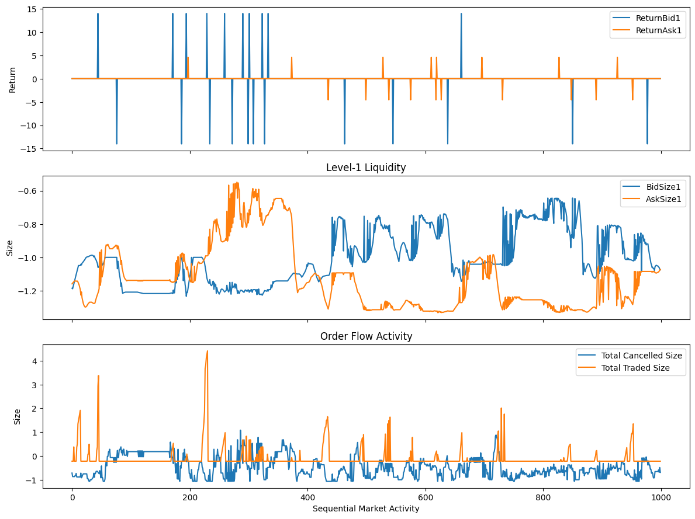
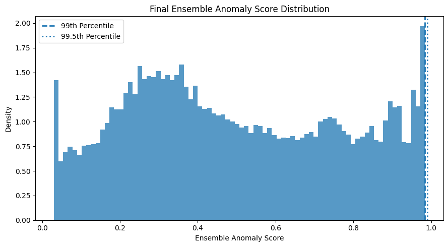
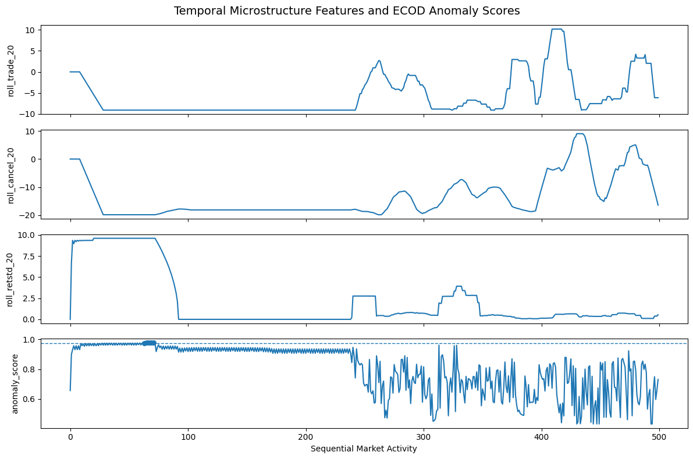

The research question
Can a model learn normal high-frequency market behavior and identify unusual liquidity and order-flow patterns without labeled examples of manipulation?
Our project approaches market surveillance as a one-class anomaly detection problem. Training and validation data contain normal observations, while the hidden test set contains anomalies. Rather than classifying specific types of manipulation, we rank observations by how far their behavior deviates from the learned normal distribution.
Understanding market microstructure
The dataset contains high-frequency Level 1 order-book observations for Intel, Apple, Microsoft, Google and Amazon. It records best-bid and best-ask returns, order sizes, trade and cancellation activity, and event timing.
Market behavior is inherently sequential. Price changes, liquidity and order flow must be viewed in the context of adjacent events rather than treated as independent measurements.


Constructing a microstructure representation
Beyond the raw variables, we developed feature groups that capture relative liquidity, price changes, order flow and temporal context. These support defensive surveillance by identifying departures from typical market behavior.
| Feature group | Purpose |
|---|---|
| Spread and return dynamics | Characterize price movements and volatility |
| Liquidity imbalance | Measure asymmetry between sides of the book |
| Trading and cancellations | Represent changes in order-flow activity |
| Nonlinear interactions | Capture relationships between liquidity, returns and flow |
| Temporal features | Describe evolving activity and localized volatility |
Adding core engineered features materially improved performance. Rolling features offered a smaller incremental benefit, while a more extensive set of temporal transformations introduced redundancy and did not improve the final results.
Three complementary anomaly detectors
Isolation Forest
Random tree partitions isolate sparse observations in feature space. Points that require fewer splits receive higher anomaly scores.
Autoencoder
A neural network learns a compact representation of normal observations. Reconstruction error measures how poorly an observation fits that representation.
Empirical Cumulative Distribution-based Outlier Detection (ECOD)
ECOD derives outlier scores from empirical tail probabilities. Its distribution-free approach is well suited to heavy-tailed microstructure variables.
Combining the models
Normalized rank-percentiles make heterogeneous anomaly scores comparable. An ECOD-dominated ensemble integrates tail sensitivity, geometric sparsity and reconstruction-based detection.

From raw features to a stronger ensemble
The competition's public leaderboard allows comparison of the raw-feature models, enriched representations and final ensemble.
| Model | Raw features | Engineered features |
|---|---|---|
| Isolation Forest | 0.89337 | 0.93966 |
| Autoencoder | 0.92762 | 0.94943 |
| ECOD | 0.91401 | 0.95283 |
| Rank ensemble | — | 0.95328 |
Reported Kaggle public leaderboard scores, not accuracy percentages. The engineered ECOD configuration incorporates rolling temporal features and uses normal training and validation observations for fitting; the other two scores use non-temporal engineered features.
ECOD was the strongest standalone detector after feature engineering. The rank-based ensemble delivered a modest further improvement of 0.00045 relative to the strongest standalone score.
Additional experiments with COPOD, HBOS and Local Outlier Factor did not outperform the final approach or were computationally impractical at the dataset's scale.
Checking generalization and anomaly behavior
We compared anomaly-score distributions for known-normal validation observations and the hidden test sample. The validation results suggest that extreme scores remain relatively uncommon on unseen normal data, while the hidden test contains more upper-tail observations.


Each detector captures a different notion of abnormality. Tail-based, geometric and reconstruction-based scores can therefore offer complementary information for prioritizing observations for review.
Conclusions and limitations
Carefully designed market microstructure features can substantially improve unsupervised anomaly detection, while combining complementary detectors provides a small additional benefit.
The competition result establishes performance on the provided dataset, not real-world surveillance efficacy. Abnormal events can arise from legitimate trading or changing market conditions; an anomaly score is not evidence of intent. The top-of-book data also do not reveal the complete order book or individual participant behavior.
Because ensemble weights and feature choices were evaluated repeatedly against the public leaderboard, further testing on independent, temporally separated data is needed to assess generalization and operational false-positive rates.
Full project report
Read the full machine learning project report (DOCX)
Tejas Pandya and Shreya Volety